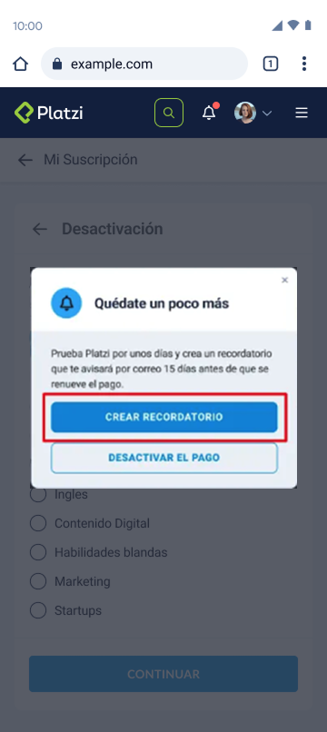

Voluntary cancellation flow
Redesigning the subscription cancellation experience to reduce churn while keeping user trust and transparency.
−20%
Voluntary cancellation completion rate


20%Decrease in voluntary cancellation completion
60%Reduction in payment-related support requests
01 — Problem
Over half of churn came from voluntary cancellations
More than 50% of churn originated in the voluntary cancellation flow — students who chose to stop paying, or had billing issues.
ANo self-service reactivationReactivating meant contacting support, friction that kept reactivation rates low.
BConfusing interfaceToo many options led students to cancel when they could have paused instead.
CNo payment update flowStudents couldn’t update their card and retry billing on their own; support contact was required but rarely happened.
Alternatives with cognitive friction
Iteration 1/2
HypothesisIf we improve alternatives, add credit card updates and include cognitive friction in the cancellation section, voluntary cancellations will drop.
Changes implemented
Context-specific alternativesDifferent options depending on the cancellation reason.
Self-service card updatesUpdate payment details without contacting support.
Hidden cancel CTAThe cancel button moved deeper into settings to add friction.

Mixed successCancellations dropped, but negative sentiment about cancel difficulty grew on social media.
Alternatives workedMany students found an option that addressed their concern without canceling.
Card update was effectiveSupport requests fell 60% with no increase in past-due accounts.
Key insightThe main reason to cancel was uncertainty about having money at renewal a year later.
Transparency with strategic alternatives Shipped
Iteration 2/2
Key changes
Removed frictionCancel became a visible CTA again, restoring trust.
Kept what workedPause, plan changes and the card update flow stayed.
Added a cancellation reminderA reminder 15 days before renewal, instead of canceling immediately.
Why this workedStudents canceled right after purchase out of financial uncertainty, not dissatisfaction. Deferring the decision gave them time to experience the value.
Better brand perceptionSocial complaints dropped significantly after removing manipulative friction.
Win-win outcomeStudents felt in control while premature cancellations fell.
Root cause addressedThe reminder solved the financial-uncertainty problem directly.
Improvements heldCard updates and alternative options kept performing well.
02 — Key takeaways
What I learned
01
User trust is non-negotiable
Friction can cut cancellations short-term but damages reputation long-term. Transparency wins.
02
Find the root cause
Research uncovered the real reason — financial uncertainty about renewal — and the reminder addressed it directly.
03
Iterate on feedback
The second iteration succeeded by listening to both metrics and qualitative feedback, including social sentiment.
04
Self-service reduces friction
Letting users solve problems themselves — card updates, pausing — helped both students and support.